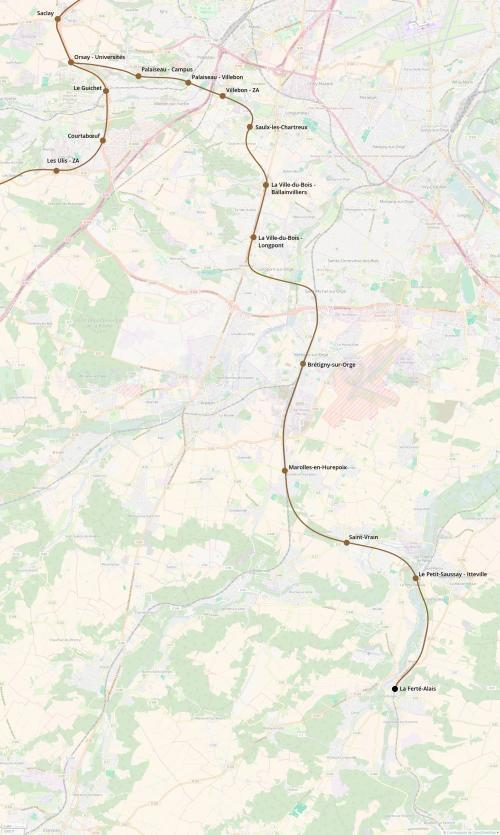

RER G La Ferté-Alais
RER G La Ferté-Alais
Orsay-Université - La Ferté-Alais
Création de la ligne G du RER.
Descendant vers le sud de l'Île-de-France cette branche du RER G permettra de relier la zone universitaire de Saclay avec le sud et l'est de l'Essonnes. Elle permettra également d'assurer la correspondance avec les RER C, D et F ainsi qu'avec le transilien R. L'infrastructure entre Bourray et Ballancourt-sur-Essonnes sera partagée avec le transilien R Malesherbes.
Voir les autres projets associés à cette ligne
Carte

Cliquer pour agrandir
Si ce projet vous intéresse n'hésitez pas à le (re-)partagez sur les réseaux sociaux ou par courriel ou à en parler autour de vous.
Si vous souhaitez travailler à la concrétisation de ce projet, passez à l'action et contactez nous.
Commenter